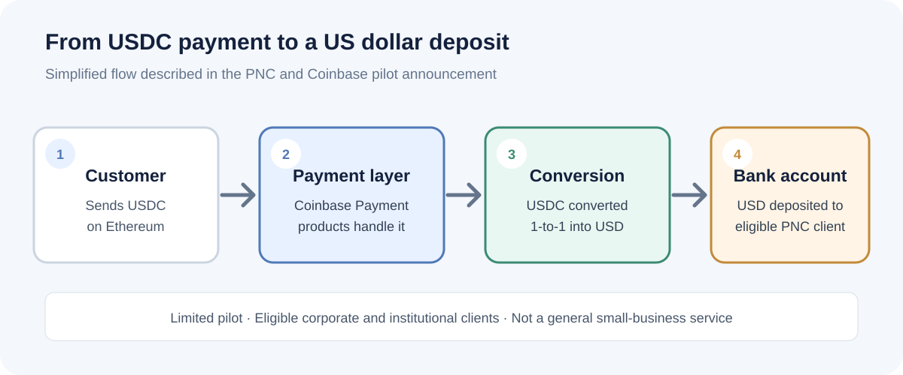

Finance and fintech
How businesses can receive USDC payments and convert them to dollars
A business may want the speed of a stablecoin payment without keeping cryptocurrency on its balance sheet. A new PNC and Coinbase pilot shows one way a bank can receive USDC and convert it into a regular dollar deposit.
Some payment and banking services let eligible businesses receive USDC and convert it into US dollars before the money reaches a bank account. In PNC's limited pilot announced on 9 November 2026, eligible Corporate and Institutional Banking clients can receive USDC on Ethereum through Coinbase Payment products. PNC says incoming payments are automatically converted 1-to-1 into dollars and deposited into a designated PNC account. This is not a service currently available to every business.
What does it mean to accept USDC as a business?
USDC is a digital token designed to maintain a value of one US dollar. It can be transferred on supported blockchain networks. When a business accepts USDC, the payment arrives as a token rather than through the usual card or bank-transfer rails.
That does not automatically mean the business wants to hold crypto. A payment provider or banking partner may convert the incoming token into fiat currency, such as US dollars, and arrange for the funds to be credited to a bank account. The exact process depends on the provider, network, account eligibility and contract.
How the PNC and Coinbase pilot works
On 9 November 2026, PNC Bank announced that eligible clients of its Corporate and Institutional Banking business can receive USDC payments on Ethereum. Coinbase Payment products provide the payment infrastructure. PNC says incoming USDC is automatically converted 1-to-1 into US dollars and deposited into a designated PNC deposit account.
- A customer sends USDC on Ethereum.
- The payment is handled through Coinbase Payment products.
- The incoming USDC is converted 1-to-1 into US dollars.
- The dollars are deposited into the participating business's designated PNC account.
This describes the PNC pilot announced by the companies. Other providers may use different networks, conversion arrangements and settlement processes.
The companies describe the service as a limited pilot for eligible corporate and institutional clients. The public announcement does not provide a universal sign-up route for small businesses, a complete fee schedule or a guaranteed settlement-time benchmark.

Why might a business consider stablecoin payments?
- Cross-border collection: a customer and supplier may be able to transfer a supported stablecoin without using the same local payment network.
- Payment availability: blockchain transfers can operate outside conventional banking hours, although conversion and bank-account crediting may still depend on provider processes.
- Dollar settlement: automatic conversion can let a participating business receive a dollar deposit instead of managing a USDC balance itself.
- New customer options: a business serving customers already using digital assets may want another way to collect payment.
These are potential benefits, not a promise that every stablecoin payment will be faster or cheaper than a bank transfer. A business should compare the complete journey from customer payment to usable funds in its account.
What should a business check before accepting USDC?
| Check | Why it matters | Question to ask |
|---|---|---|
| Eligibility | Some services are limited to selected business types, locations or existing bank clients. | Can our legal entity and country use this service? |
| Network | USDC exists on more than one supported blockchain. Sending on the wrong network can cause loss or delay. | Which network and token contract must the payer use? |
| Conversion | The conversion rate, timing and provider process affect the amount received. | When does conversion happen, and what rate is applied? |
| Fees | Network, service, conversion or bank fees may affect the final amount. | What is the total cost from payment to bank deposit? |
| Reconciliation | Finance teams need to match the payment to an invoice and customer. | What transaction references and reports are provided? |
| Compliance | Businesses may have customer, sanctions, tax and recordkeeping obligations. | Which checks and records are our responsibility? |
| Refunds and disputes | Blockchain transfers are not the same as card chargebacks. | How are mistakes, refunds and disputed payments handled? |
USDC payments are not the same as a bank transfer
A bank transfer moves money through banking and payment systems. A USDC payment transfers a token on a blockchain. A provider may connect that blockchain payment to a bank deposit, but the two stages remain different.
That distinction matters when a payment is sent to the wrong address, uses an unsupported network, or needs to be refunded. Blockchain transfers generally do not have the same built-in reversal and chargeback process as card payments. Businesses need clear procedures for verifying payment instructions and resolving mistakes before accepting funds.
Does automatic conversion remove the risks?
No. Conversion can reduce the need for a business to hold a stablecoin, but it does not remove every risk. A business still needs to understand provider and bank eligibility, the network being used, transaction monitoring, operational controls, settlement timing, fees and how exceptions are handled.
USDC is designed to track the US dollar, but it is not the same thing as cash in an insured bank deposit account. Stablecoins also involve issuer, reserve, custody, technology and regulatory considerations. Read the issuer's disclosures and the service provider's terms rather than assuming a one-dollar target guarantees a risk-free payment.
Is this suitable for small businesses?
It depends on the business's customers, countries, payment volume, banking relationships and the service available to it. The PNC announcement is specifically about eligible corporate and institutional clients in a limited pilot. It should not be read as proof that a small business can open an account and start receiving USDC through PNC today.
A smaller business should first compare the payment options it can actually access. If its customers already pay reliably through bank transfers or card payments, a new stablecoin workflow may add complexity without enough benefit. If it regularly receives cross-border payments, it may be worth comparing a stablecoin provider's total costs and settlement process with existing alternatives.
A practical checklist before launch
- Confirm the provider accepts your business entity and the countries where you operate.
- Confirm the exact USDC network and supported wallet or payment instructions.
- Get written details of conversion rates, fees, settlement timing and account-credit conditions.
- Test invoice matching, payment notifications and accounting exports.
- Write a process for wrong-network transfers, duplicate payments, refunds and suspicious transactions.
- Ask your accountant and legal or compliance adviser how the activity should be recorded and monitored in your jurisdictions.
Frequently asked questions
Can a business receive USDC and get US dollars in its bank account?
Yes, some providers offer a conversion and bank-deposit arrangement. PNC's limited pilot with Coinbase, announced on 9 November 2026, is one example for eligible corporate and institutional clients.
Does PNC's USDC payment service work for every business?
No. PNC describes it as a limited pilot for eligible Corporate and Institutional Banking clients. Businesses should contact PNC directly to confirm eligibility and availability.
Does USDC always convert to exactly one US dollar?
PNC says its pilot converts incoming USDC 1-to-1 into US dollars. That is a description of this service's announced conversion arrangement, not a guarantee that every USDC provider or exchange will offer the same rate or terms.
Are stablecoin payments cheaper than bank transfers?
Not necessarily. Compare network charges, provider fees, conversion costs, bank fees, foreign-exchange costs and the time until funds are usable. The PNC announcement does not publish a complete fee comparison.
Can a stablecoin payment be reversed like a card payment?
Usually not through the same card-network chargeback process. Businesses should agree on refund and error-handling procedures with their provider before accepting payments.
What this development means
The PNC and Coinbase pilot is a useful example of traditional banking services connecting to stablecoin payment infrastructure. Its practical significance is not simply that a bank accepts a crypto token. It is that an eligible business can receive USDC and have the payment converted into dollars for a designated bank account.
For businesses, the important questions remain operational: who can use the service, what it costs, how quickly funds become available, how payments are reconciled and who handles compliance and exceptions. Those details matter more than the headline announcement.